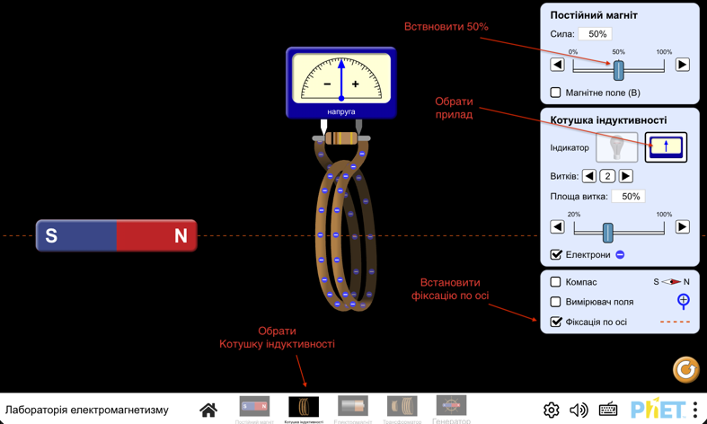

Мета: дослідити умови виникнення індукційного струму в замкненій котушці; з'ясувати чинники, від яких залежать сила та напрямок індукційного струму
Обладнання: міліамперметр (або амперметр із шунтом), два штабові або дугоподібні магніти, дротяна котушка-моток на каркасі
Впишіть ваш клас
Впишіть ваше прізвище та ім'я
Підготовка до експерименту
1. Перед виконанням роботи згадайте:
- вимоги безпеки під час роботи з електричними колами;
- правила, яких необхідно дотримуватися під час вимірювання сили струму амперметром;
- як залежить сила індукційного струму від швидкості зміни магнітного поля;
- від чого залежить напрямок індукційного струму.
2. Виконайте завдання. На рис. 1-4 зображено штабовий магніт, котушку-моток (далі – котушка), приєднану до міліамперметра, та зазначено напрямок швидкості руху магніту. Перенесіть рисунки до зошита й для кожного випадку:
- укажіть магнітні полюси котушки (впишіть в текстові поля N або S);
- визначте та покажіть напрямок індукційного струму в котушці.
Експеримент
Експеримент 1. З'ясування умов виникнення індукційного струму в замкненому провіднику та чинників, від яких залежить напрямок індукційного струму.
Для проведення експерименту скористаємося віртуальною лабораторією.

- Оберіть розділ "Котушка індуктивності"
- Замініть лампочку на індикатор
- Утримуючи котушку та магніт у руках, послідовно виконайте досліди, зазначені в табл. 1.
Таблиця 1
| № | Дії з магнітом і котушкою | Як поводиться стрілка міліамперметра (відхиляється ліворуч, праворуч, не відхиляється) |
|---|---|---|
| 1 | Уводимо магніт у котушку північним полюсом | |
| 2 | Залишаємо магніт нерухомим | |
| 3 | Виводимо магніт із котушки | |
| 4 | Уводимо магніт у котушку південним полюсом | |
| 5 | Залишаємо магніт нерухомим | |
| 6 | Виводимо магніт із котушки | |
| 7 | Наближаємо котушку до південного полюса магніту | |
| 8 | Наближаємо котушку до північного полюса магніту |
Аналіз результатів експерименту 1
Проаналізуйте табл. 1 і сформулюйте висновок, у якому зазначте:
1) за яких умов у замкненій котушці виникає індукційний струм;
2) як змінюється напрямок індукційного струму в разі зміни напрямку руху магніту;
3) як змінюється напрямок індукційного струму в разі зміни полюса магніту, який наближають або віддаляють від котушки.
Експеримент 2. З'ясування чинників, від яких залежить значення індукційного струму.
Утримуючи котушку та магніт в руках, послідовно виконайте досліди, зазначені в табл. 2. Щоразу знімайте покази міліамперметра та заносьте їх до табл. 2.
Таблиця 2
| № | Дії з магнітом і котушкою | Сила струму I, мА. (Ціна поділки 1 мА) |
|---|---|---|
| 1 | Швидко вводимо магніт у котушку | |
| 2 | Повільно вводимо магніт у котушку | |
| 3 | Встановлюєм силу постійного магніту в 100% та швидко вводимо магніт в котушку | |
| 4 | Повільно вводимо в котушку магніти, силу якого встановлено в 100% |
Аналіз результатів експерименту 2
Проаналізуйте табл. 2 і сформулюйте висновок, у якому зазначте:
1) як залежить сила індукційного струму від швидкості відносного руху магніту та котушки;
2) як залежить сила індукційного струму від значення індукції зовнішнього магнітного поля, зміна якого спричиняє появу струму в котушці.
Творче завдання
Продумайте та запишіть план проведення експериментів із дослідження умов виникнення індукційного струму в замкненій котушці для випадків, коли дві котушки надіто на спільне осердя (див. рис.).